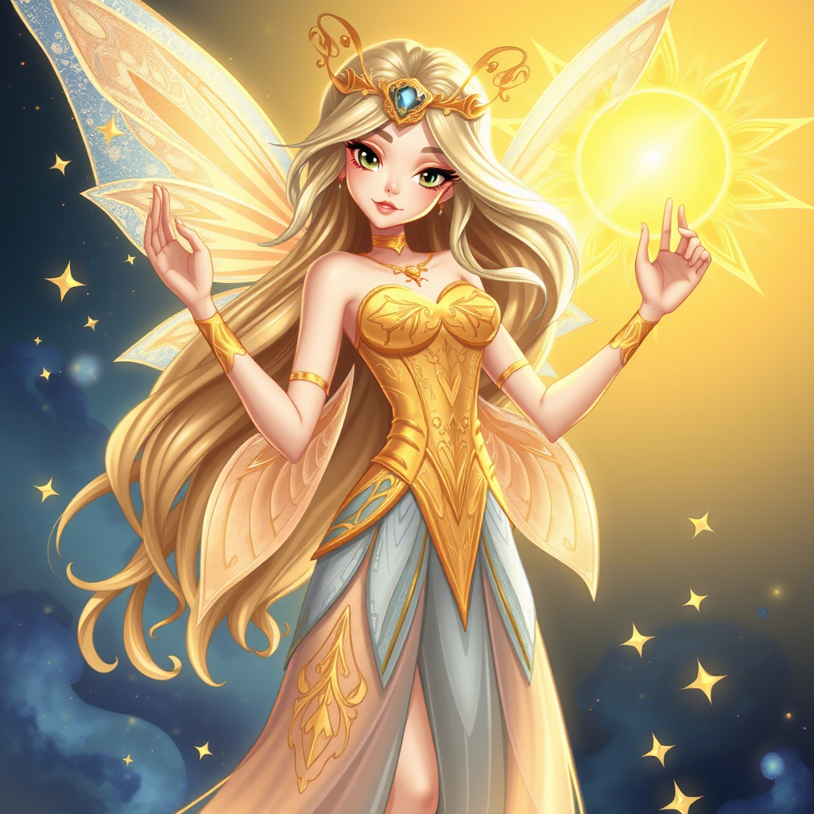
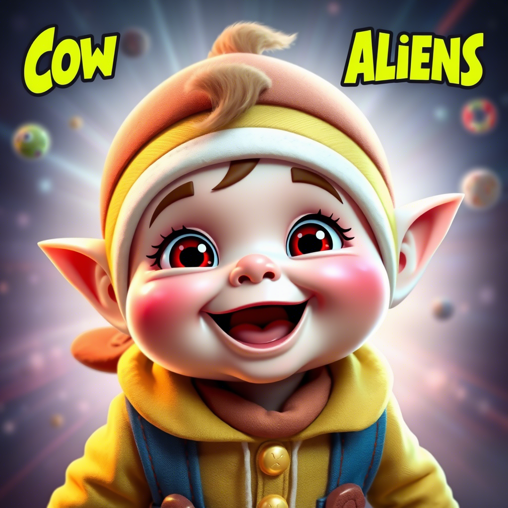
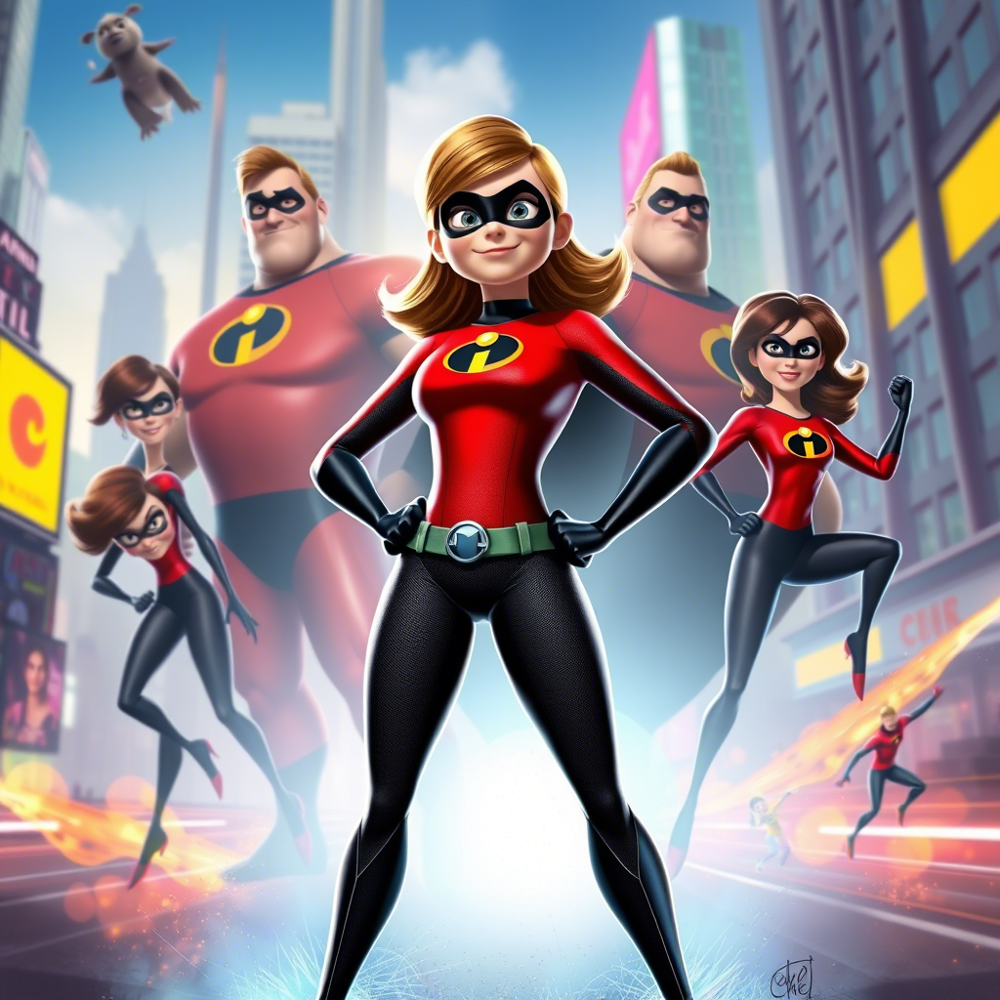
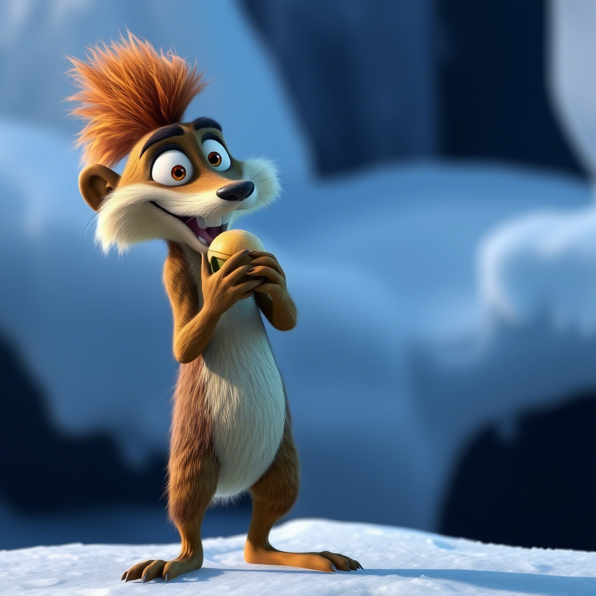
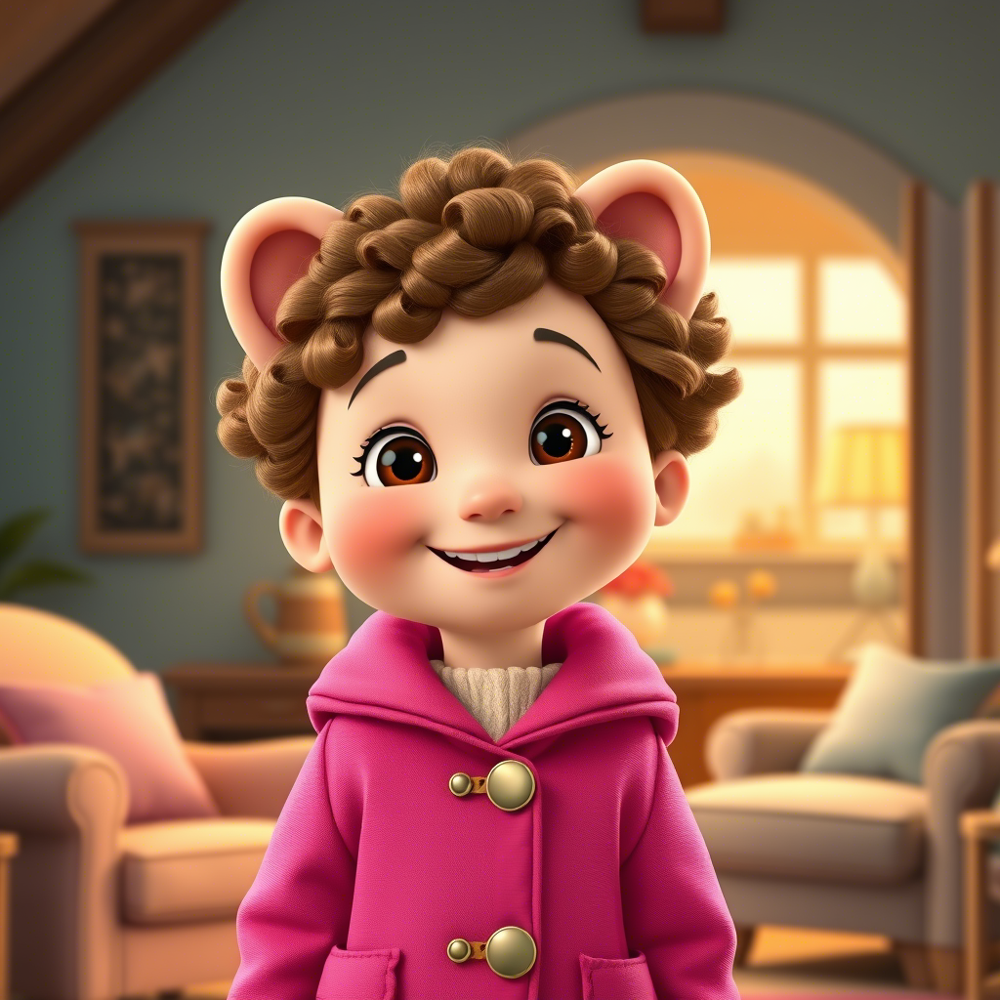
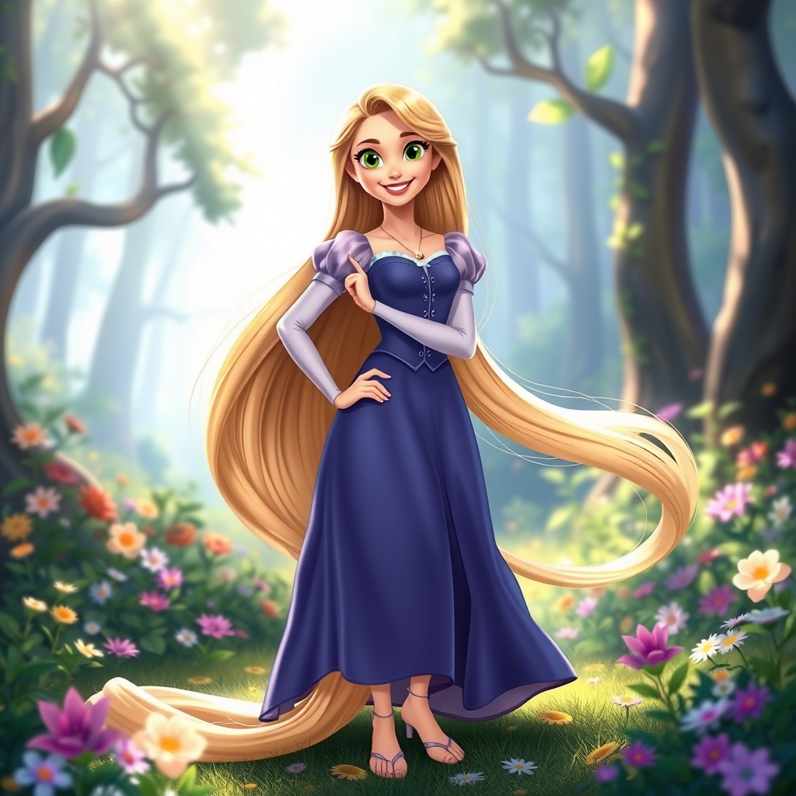
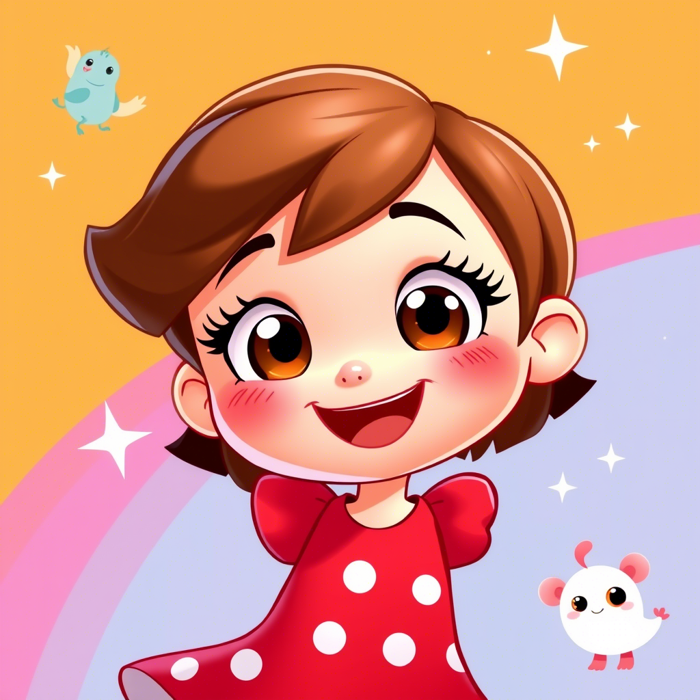
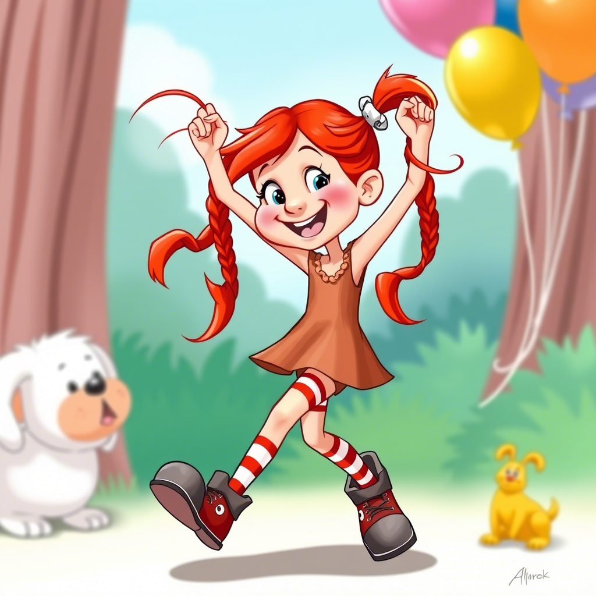
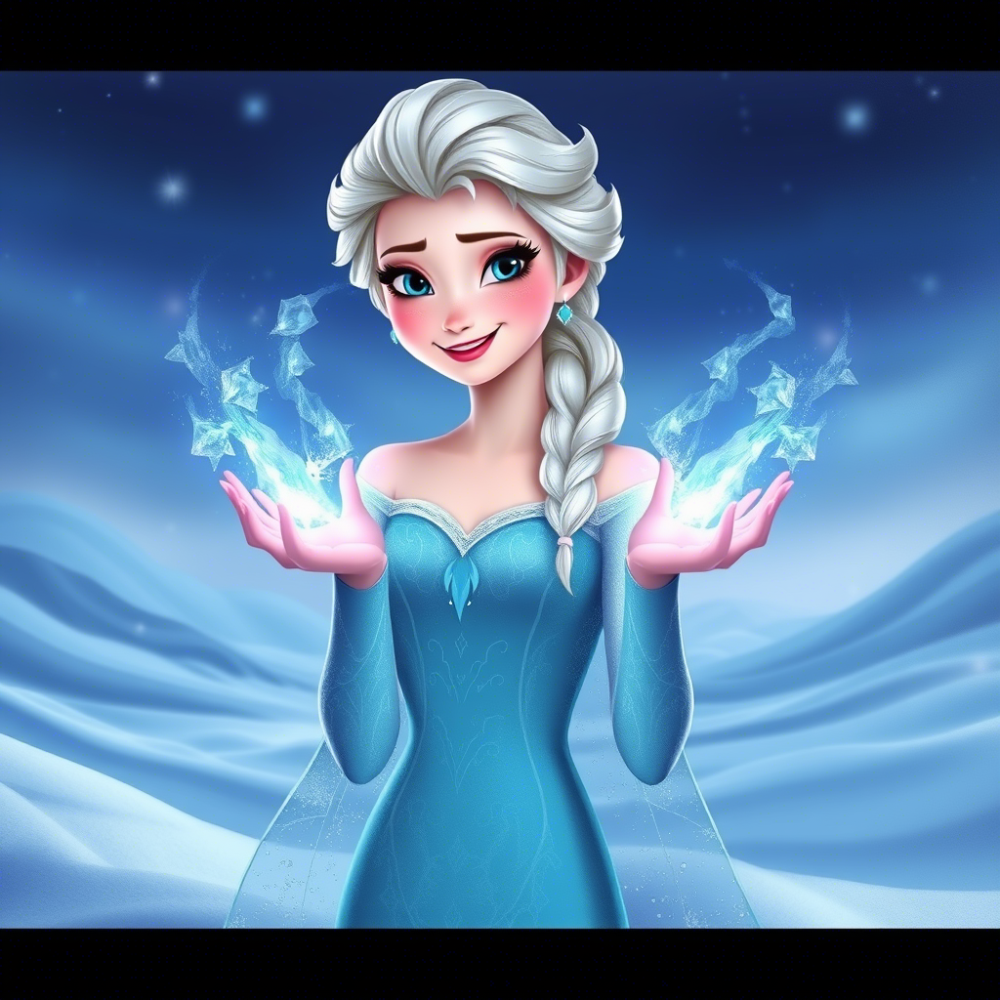
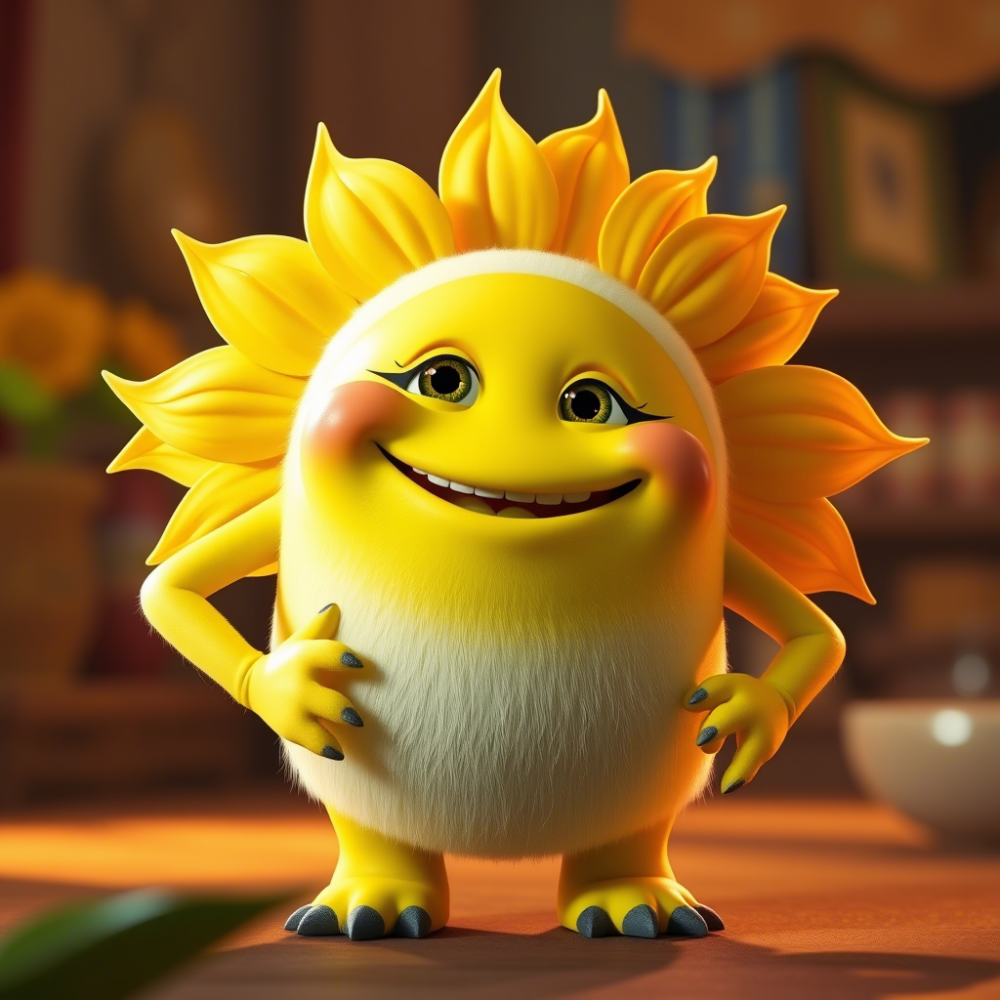

Луна из "Винкс" - стихия солнца

Бэби из "Ковбои против пришельцев" - яркость и оптимизм

Лайла из "Суперсемейки" - солнечный характер и энергия

Белка из "Ледникового периода" - активность и задор

Хлоя из "Приключениям Паддингтона" - позитивное мышление

Рапунзель из "Рапунцель: Запутанная история" - светлый характер

Лу из "Лу и Фил" - жизнерадостность

Пеппи Длинный чулок - неиссякаемая энергия

Эльза из "Холодного сердца" (в ее добром варианте) - величие и свет

Солнышко из "Монстры на работе" - буквально воплощение солнца